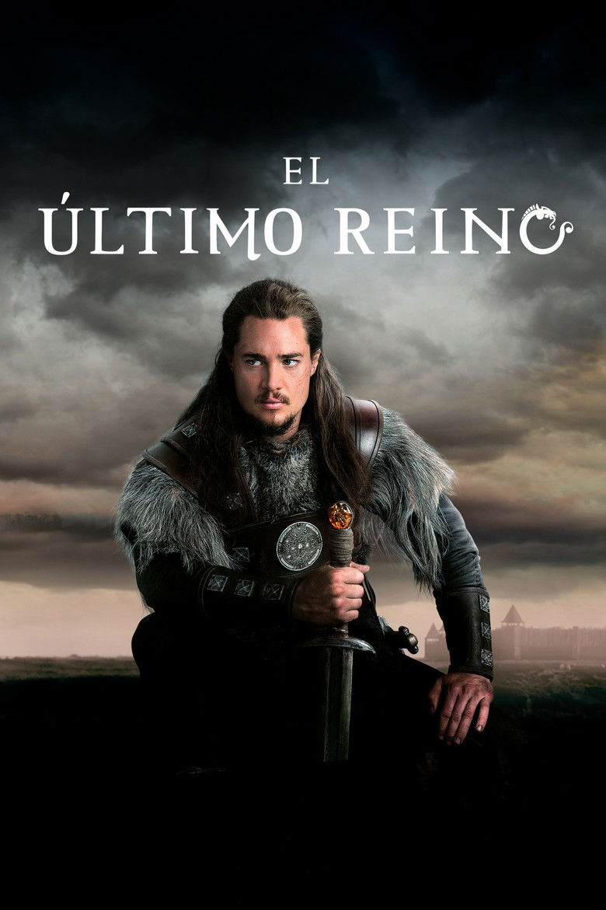
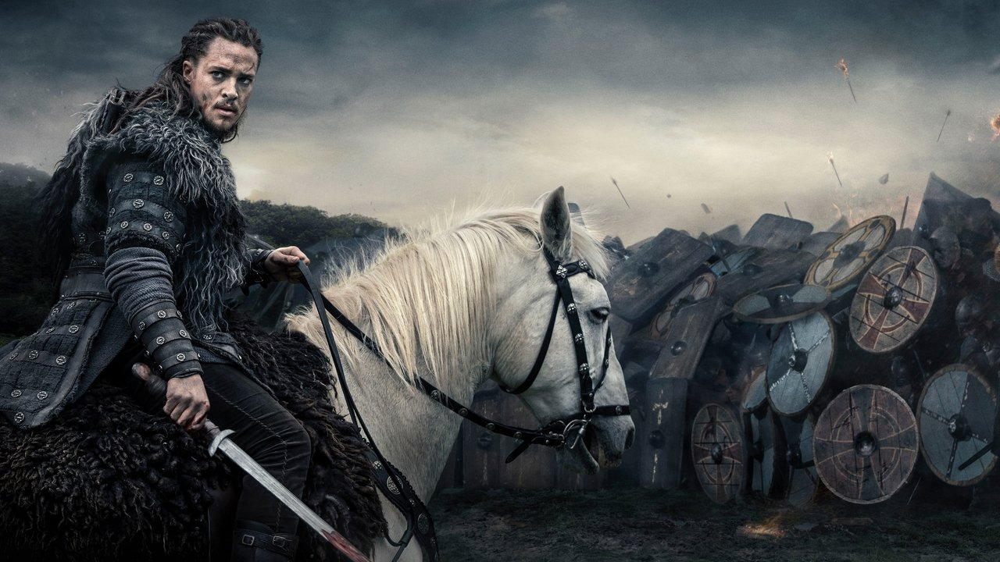

Ejemplo: en El último reino vas por la temporada 2, episodio 5. Te quedan 4 episodios.
Tus series, al día.
Series y películas en español, episodio a episodio. Y tus datos, siempre tuyos.
Seguir viendo

Los 100 2014
Temporada 2, episodio 12te quedan 5 episodios

Sherlock 2010
Temporada 3, episodio 2te quedan 2 episodios
Logotipo
El monograma de B con el chaflán de las portadas y la palabra en caja alta por CSS. En pantalla, el bloque toma el color de la escena; como icono de app y favicon, va fijo en tinta.
Paleta
Sala#0a0a0a · L14
Superficie#151515 · L20
Elevada#212121 · L25
Tinta#f2f0eb · 17,4:1
Apagado#a19d96 · 7,3 / 6,8 / 6,0:1
Escena · El último reino#d9a35e · L75 C0,11 H72 · 8,8:1
Escena · Los 100#9ab552 · L73 C0,13 H122 · 8,6:1
Escena · Sherlock#62c0b4 · L75 C0,09 H185 · 9,2:1
Reserva#b8ab95 · L73 · 8,9:1
Visto · 10,4:1
Error · 9,1:1
Lo fijo: sala, superficies, tinta, apagado y reserva. Lo que cambia: el acento, que sale de cada portada y se acota a L 55–75 % y C ≥ 0,08 (K5). En las listas, el acento solo llena la pista; los botones van en superficie elevada. Contrastes con #0a0a0a; el foco es siempre la tinta.
Tipografía
Tus series, al día.
AÑO ÉPICO
Tus datos, siempre tuyos.
Marcas el episodio al terminarlo y sabes por dónde vas, en el móvil o en el escritorio.
T2 E5 · cap. 112 · p. 240 · 12 h
Forma e imagen
Los informáticos

El último reinoRetícula y movimiento
4 columnas a 390 · 12 a 1440 · margen clamp(16, 2,2vw, 32) · medianil clamp(12, 1,6vw, 24) · máx. 1376 · base 4Marcar visto llena el tramo en 160 ms (cubic-bezier(.2,0,0,1)); desde teclado, sin animación · inclinación ±6° con muelle, solo con puntero fino